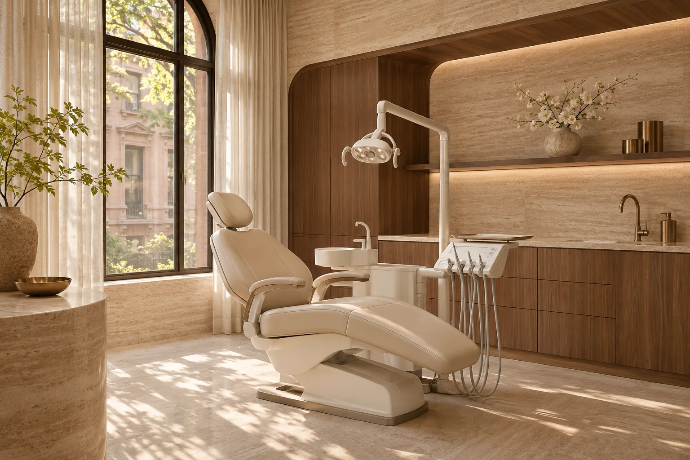
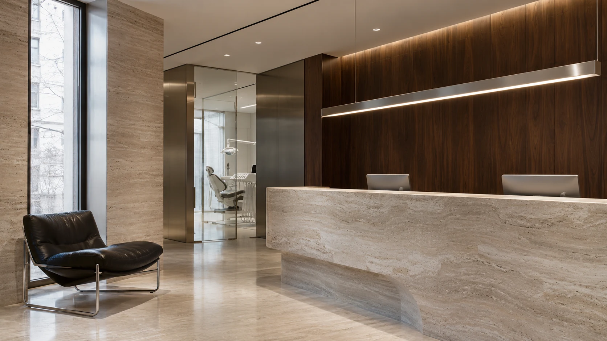

Внутри Varenne
Свет из сада, тёплое дерево и камень. В кабинете есть место для лечения и для спокойного разговора с врачом.

Первая встреча
Если у вас уже есть снимки или план лечения, возьмите их с собой. Вы сможете показать их врачу и задать вопросы.

В гостиной
Администратор встретит вас и проводит к врачу. Здесь можно спокойно подготовиться к приёму.
Наедине с врачом
Обсудите, что вас беспокоит, какого результата вы ждёте и что хотите сохранить в своей улыбке. Этим разговором начинается план лечения.

Точность в деталях
Увеличение помогает врачу рассмотреть детали зуба во время лечения. Познакомьтесь со специалистами и выберите, с кем хотели бы обсудить свою задачу.
Познакомиться с врачамиПример визита
Первая консультация
Выберите направление, врача и удобное для вас время.